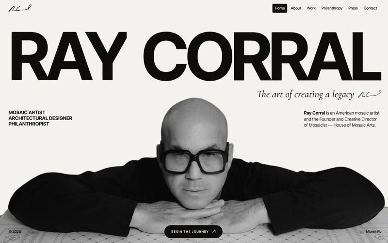
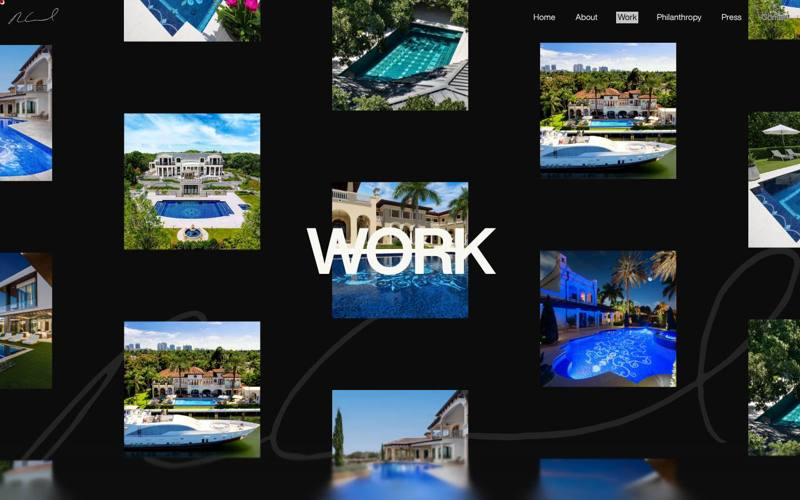
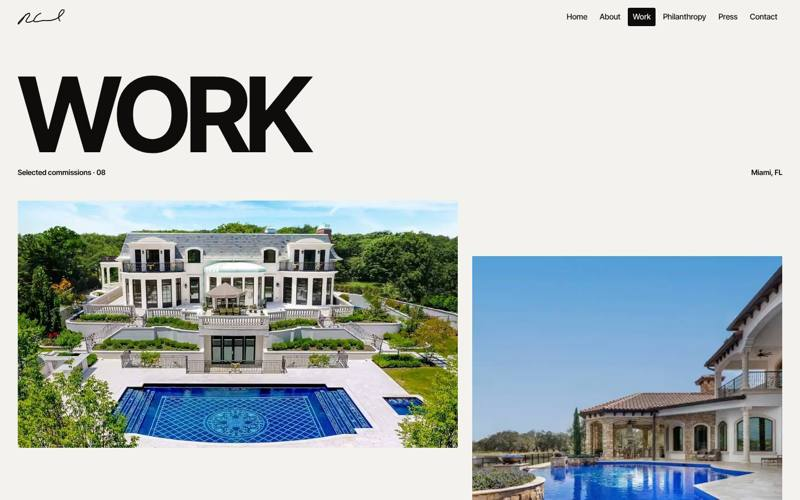
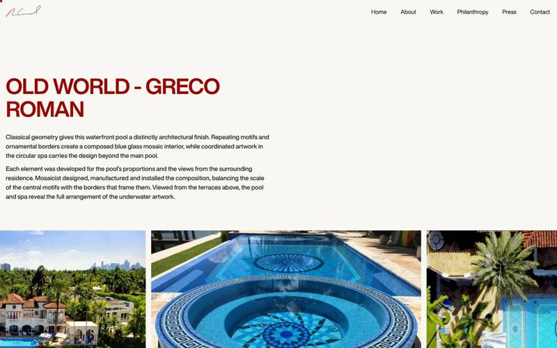
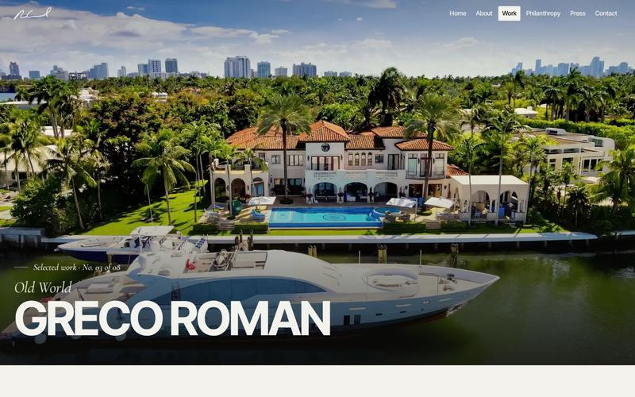
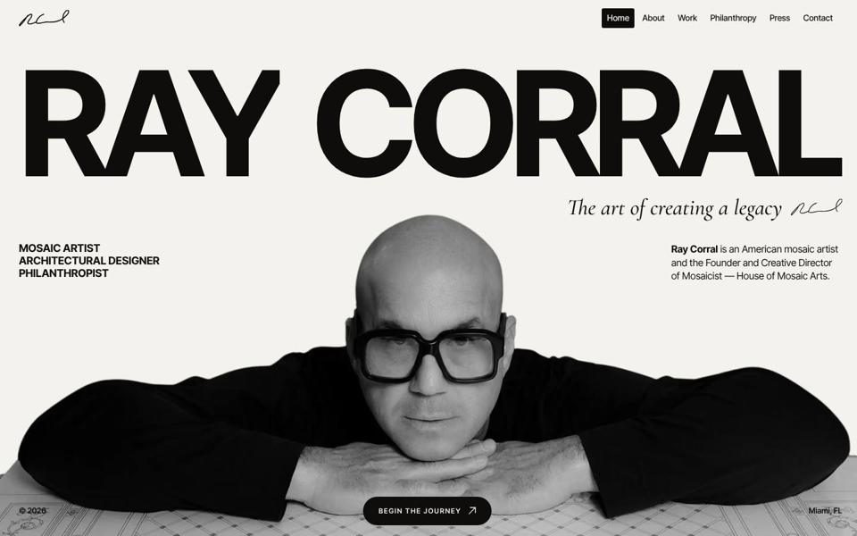
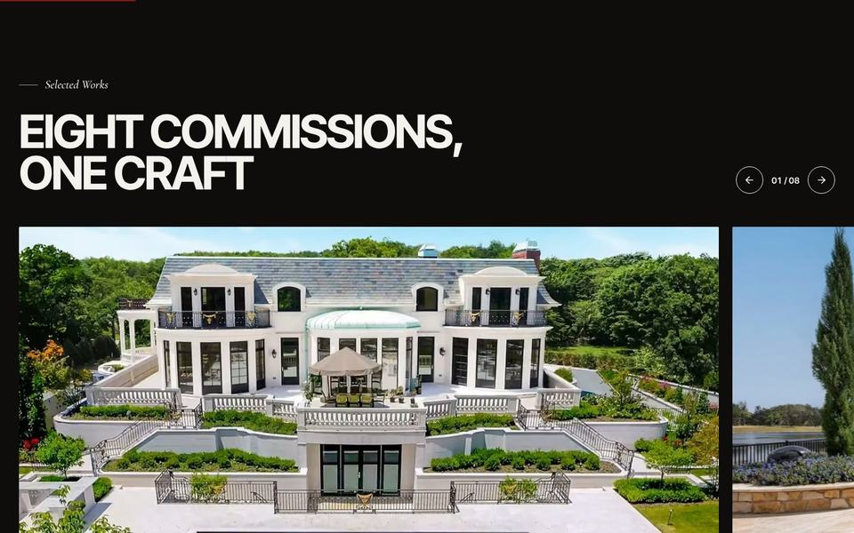
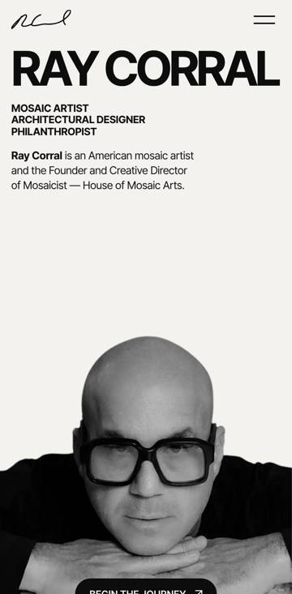

Сайт Рэя Коррала выглядит как дорогое портфолио, но он перегружен: на компьютере посетитель несколько секунд смотрит на чёрный экран, прокрутка на главной почти не двигается, на телефоне страница весит 6,7 МБ, а Google почти не видит работы художника. Точечными правками это не лечится: тормозит сама конструкция сайта. Мы предлагаем редизайн в том же стиле, и он уже собран: все 15 страниц можно открыть и проверить прямо сейчас.Ray Corral’s website looks like a premium portfolio, but it is overloaded: desktop visitors stare at a black screen for seconds, scrolling on the home page barely moves, on phones the page weighs 6.7 MB, and Google barely sees the artist’s work. Spot fixes will not cure this: the site’s construction itself is what slows it down. We propose a redesign in the same style, and it is already built: all 15 pages are live for you to open and try right now.
Анимационная библиотека подключена дважды, рядом её версия 2017 года, плавная прокрутка тоже в двух копиях. Телефон делает лишнюю работу на каждом заходе.The animation library is included twice, plus its 2017 version, and smooth scrolling also comes in two copies. The phone does extra work on every visit.
Две версии библиотеки Unicorn Studio и проект, указанный дважды, давали три 3D-сцены на 60 кадрах в секунду, в том числе на телефонах.Two versions of the Unicorn Studio library and a project referenced twice produced three 3D scenes at 60 fps, phones included.
Эффект «волны» на фото подгружался с демонстрационной страницы постороннего ресурса вместе с 3D-движком 2019 года. На главной этот эффект работал на скрытом блоке, который никто не видит.The photo “ripple” effect was loaded from an unrelated demo page together with a 3D engine from 2019. On the home page it ran on a hidden block nobody can see.
Телефону отправляются снимки под большой монитор, а главная фотография грузится последней. Из 6 МБ главной страницы около 5,4 МБ приходится на фото.Phones receive images sized for large monitors, and the main photo loads last. About 5.4 MB of the 6 MB home page is photography.
Нет карты сайта, у фото нет подписей, у внутренних страниц нет описаний, два адреса с опечатками (philantropy, miditerranean), сайт открывается и с www, и без.No sitemap, no image descriptions, no page descriptions, two URLs with typos (philantropy, miditerranean), and the site answers on both www and non-www.
В премиум-сегменте сайт работает как визитка мастерской: заказчик судит о качестве мозаики по тому, как выглядит и ощущается страница. Сейчас сайт красив на статичном скриншоте, но в руках тормозит и заставляет ждать. Редизайн сохраняет характер и убирает всё, что мешает ощущению дорогой вещи.In the premium segment a website is the studio’s calling card: clients judge the quality of the mosaics by how the page looks and feels. Today the site is beautiful in a static screenshot but stutters in the hand and makes people wait. The redesign keeps the character and removes everything that gets in the way of a premium feel.





| Что важноWhat matters | СейчасNow | РедизайнRedesign |
|---|---|---|
| Первое впечатлениеFirst impression | Заставка 4,5 с на каждом заходе4.5 s intro on every visit | Контент сразу, подпись рисуется поверхContent at once, the signature draws over it |
| Ощущение качестваFeel of quality | Прокрутка рывками: около 1 кадра в секунду на главной в тестеChoppy scrolling: about 1 fps on the home page in the test | 60 кадров в секунду на телефоне и компьютере60 fps on phones and computers |
| ТелефонPhone | 6,7 МБ на главной; на 4G страница About показывает главный кадр через 20 с6.7 MB home page; on 4G the About page shows its main image after 20 s | 0,5 МБ; About за 0,8 с0.5 MB; About in 0.8 s |
| АнимацииAnimation | 3D-фон, курсор, плавная прокрутка и эффекты работают постоянно и тормозят всё остальное3D background, cursor, smooth scroll and effects run all the time and slow everything else down | Анимаций не меньше, но они на видеокарте и включаются, только когда нужныJust as much motion, but on the GPU and only when needed |
| ТипографикаTypography | Один гротеск во всех роляхOne grotesque for everything | Гротеск для заголовков и курсивная антиква для акцентов, как в люксовых журналахGrotesque for headlines plus an italic serif for accents, as in luxury magazines |
| ФотоPhotos | Большие файлы, мелкие миниатюры, без подписейHeavy files, small thumbnails, no captions | Крупно, раскрываются «шторкой», чёткие на Retina, подписаныLarge, revealed like a curtain, sharp on Retina, captioned |
| УправлениеNavigation | Кастомный курсор прячет обычный, прокрутка перехвачена скриптомA custom cursor hides the normal one, scrolling is hijacked by a script | Привычное поведение браузера, мягкие переходы между страницамиNative browser behaviour, smooth transitions between pages |
| Для людей и GoogleFor people and Google | Пустые описания фото, опечатки в адресах, без описаний страницEmpty image descriptions, URL typos, no page descriptions | Описано и исправлено; уважает настройку «уменьшить движение»Described and fixed; respects the “reduce motion” setting |
| НадёжностьReliability | 18 подключённых скриптов с 5 разных серверов, включая чужой демо-сайт18 scripts from 5 different servers, including someone else’s demo site | Один собственный скрипт на 4 КБOne own script of 4 KB |
Все 15 страниц уже собраны и опубликованы: главная, About, Work, восемь проектов, Press, Philanthropy, Contact и Media Kit. Откройте на телефоне: так сайт увидит большинство заказчиков.All 15 pages are already built and live: Home, About, Work, eight projects, Press, Philanthropy, Contact and Media Kit. Open it on a phone: that is how most clients will see it.



Всё это идёт на 59–60 кадрах в секунду на всех 15 страницах, на телефоне и компьютере. При системной настройке «уменьшить движение» анимации выключаются.All of this runs at 59–60 fps on all 15 pages, on phones and computers. With the system “reduce motion” setting on, animations switch off.
| Телефон, 4GPhone, 4G | СейчасNow | РедизайнRedesign | ИзменениеChange |
|---|---|---|---|
| ГлавнаяHome page | |||
| Главный контент на экране (LCP)Main content on screen (LCP) | 3,70 s | 2,00 s | −46% |
| Блокировка экрана (TBT)Total blocking time (TBT) | 1 442 ms | 144 ms | −90% |
| Вес страницыPage weight | 6,66 MB | 0,54 MB | −92% |
| СкриптыScripts | 487 KB | 4 KB | −99% |
| ЗапросыRequests | 58 | 23 | −60% |
| Плавность прокруткиScrolling smoothness | 1 fps | 60 fps | ×40 |
| About | |||
| Главный контент на экране (LCP)Main content on screen (LCP) | 20,4 s | 0,84 s | −96% |
| Вес страницыPage weight | 5,43 MB | 0,83 MB | −85% |
| Плавность прокруткиScrolling smoothness | 12 fps | 60 fps | ×5 |
| Главная, компьютерHome page, desktop | |||
| Первый кадр с контентомFirst content on screen | 1,32 s | 0,28 s | −79% |
| Блокировка экрана (TBT)Total blocking time (TBT) | 10 610 ms | 0 ms | −100% |
| Плавность прокруткиScrolling smoothness | 0,5 fps | 60 fps | ×120 |
Живой raycorral.com против редизайна на GitHub Pages, оба через интернет, кэш отключён, медиана из трёх прогонов. Телефон: эмуляция Pixel 7, 4G 1,6 Мбит/с, процессор замедлен в 4 раза. Тестовый браузер работает без видеокарты, поэтому у текущего сайта с 3D-фоном цифры на компьютере хуже, чем у реального посетителя; у редизайна 3D нет, его цифры от этого не зависят.Live raycorral.com versus the redesign on GitHub Pages, both over the internet, cache disabled, median of three runs. Phone: Pixel 7 emulation, 4G at 1.6 Mbps, 4× CPU slowdown. The test browser has no GPU, so the current site with its 3D background scores worse on desktop than a real visitor would see; the redesign has no 3D, so its numbers do not depend on this.
Нет 3D-фона, перехвата прокрутки, кастомного курсора, размытий и наложений. Все анимации идут на видеокарте через transform и opacity.No 3D background, scroll hijacking, custom cursor, blurs or blend modes. Every animation runs on the GPU via transform and opacity.
Формат AVIF в трёх размерах: телефон получает 480–960 px, большой экран 1600 px. Главное фото загружается первым.AVIF in three sizes: phones get 480–960 px, large screens 1,600 px. The main photo loads first.
Весь текст и фото видны сразу; если скрипт не загрузился, сайт всё равно читается и листается.All text and photos show immediately; if the script fails to load, the site still reads and scrolls.
Заказчики мозаики премиум-класса долго выбирают: ищут примеры, читают о технике и стилях, сравнивают мастерские. Статьи приводят их на сайт из Google по точным запросам и сразу показывают уровень Рэя. Каждая статья работает годами, в отличие от рекламы.Premium mosaic clients take their time: they look for examples, read about technique and styles, compare studios. Articles bring them to the site from Google on precise queries and show Ray’s level right away. Each article keeps working for years, unlike ads.
Редизайн уже собран целиком: вы оцениваете готовый сайт, а не макет.The redesign is already fully built: you judge a working site, not a mockup.
Переключение только после согласования; старые адреса переадресуются на новые.We switch only once you approve; old URLs redirect to the new ones.
Все 15 страниц прогнаны в браузере на телефоне и компьютере: 60 кадров в секунду, без ошибок.All 15 pages were run in a browser on phone and desktop: 60 fps, no errors.